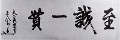

高松高校の理念と校風ー文武両道と独立自主ー
高松高校の理念は「文武両道」と「独立自主」であり、それは高松中学校の「至誠一貫」と高松高等女学校の「雪持ち笹」の精神を継承したものですが、そのことについて、溝渕利博校長先生が詳しく述べられています。
『玉翠』の歴史と高高スピリット
校長 溝渕利博(『玉翠55号』より)
高松高校の理念と校風は、明治26年に創立された高松中学校の「至誠一貫」と県立高松高等女学校の「雪持ち笹」の精神に端を発している。

東郷平八郎元帥の筆に
なるが戦火で焼失した。
一方、県立高松高等女学校の「雪持ち笹」の精神は、"竹や笹に雪折れなし"の例えどおり、多少の困難があっても、それを撥ね返すだけの凛とした内面的な力を持つとともに、松の翠がいつまでも色を変えぬように、常に匂い豊な友情をもってお互いに切磋琢磨し合う「しなやかな心」の持ち方を表している。
この二つの理念と校風を、高松高校は「文武両道」と「独立自主」の精神として受け継ぎ、これを「高高スピリット」と総称して現在に至るまで高高生の誇りとして大切に継承してきた。
「文武両道」では、学業と部活動等の両立を通じて、心身を鍛え、一方だけに偏らないバランスのとれた幅広い視野と実行力を持った豊かな人間性を養うことの大切さを学び、また「独立自主」では、世の風潮に付和雷同しない確かな自己を確立するとともに、あくなき向学心で絶えず自己を発展・向上させようとする自立心をもった人間になることの重要性を学んできたのである。